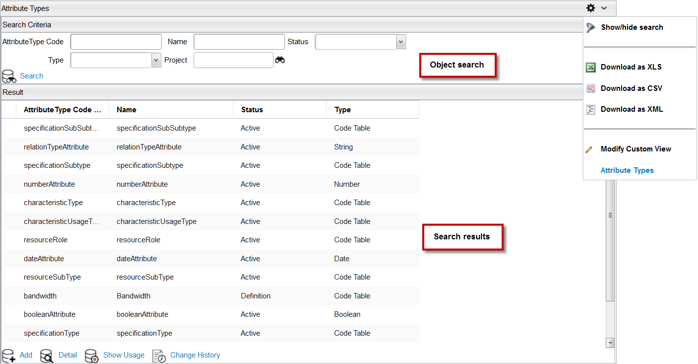
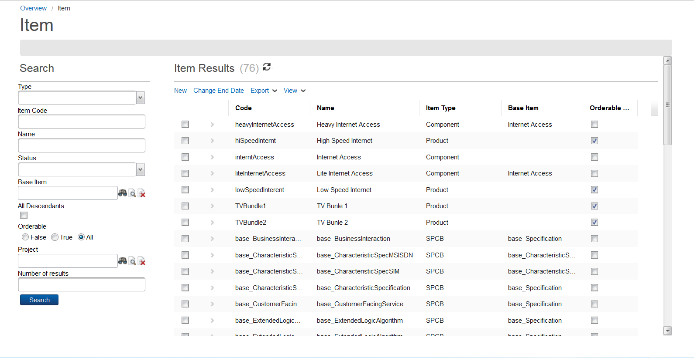
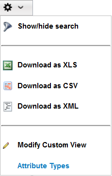

Catalog Search
The Search Criteria dialog is useful when you want to retrieve information about a specific object. The search dialog is available in the user interface of each catalog object. The appearance of the search dialog can be different depending on the object that you have selected.
The following example shows how to search for an attribute. Searches for other objects are similar.
To perform a search, follow these steps:
- From the Catalog application's main page, click Technical Configuration > Attribute Type button from the Quick Start section to launch the Attribute Types search page.
- Specify your search criteria in the fields provided, and then click the Search button. Your search results appear in the Result section.

Notes:
- Depending
on the object that you have selected, you may see both left and right panes.
- For some objects, such version control tables, catalog hierarchies, projects, and items, the Search section appears in the left pane.

- Double-click any row from the search results to view the object's details or make changes to the object, if required.
Show or Hide the Search Criteria
By default, the search criteria section appears on pages in Catalog Designer (for example, the Attributes Types page). To hide this section, complete these steps:
- Select the Preferences button () from the Attribute Types page, and then select Show/hide search from the menu.

- The search criteria area disappears. To display it again, repeat the previous step.
|